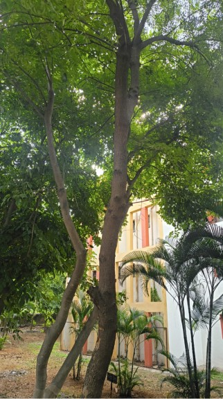

Tree Species: Azadirachta indica (Meliaceae)
Common Names: Neem, Indian Lilac, Margosa
"Hello! I’m a neem tree, and my scientific name is Azadirachta indica. I belong to the mahogany family, and I’m native to the Indian subcontinent and parts of Southeast Asia. I’m well adapted to warm climates, which is why you can often find trees like me growing around campuses, roadsides, and gardens. One of my most interesting features is a compound called azadirachtin, found mainly in my seeds. It can help deter and disrupt the development of several insect pests, making parts of me useful in natural pest management. I’ve also been an important part of traditional Indian culture for centuries, with my leaves, bark, and other parts being used in traditional practices."